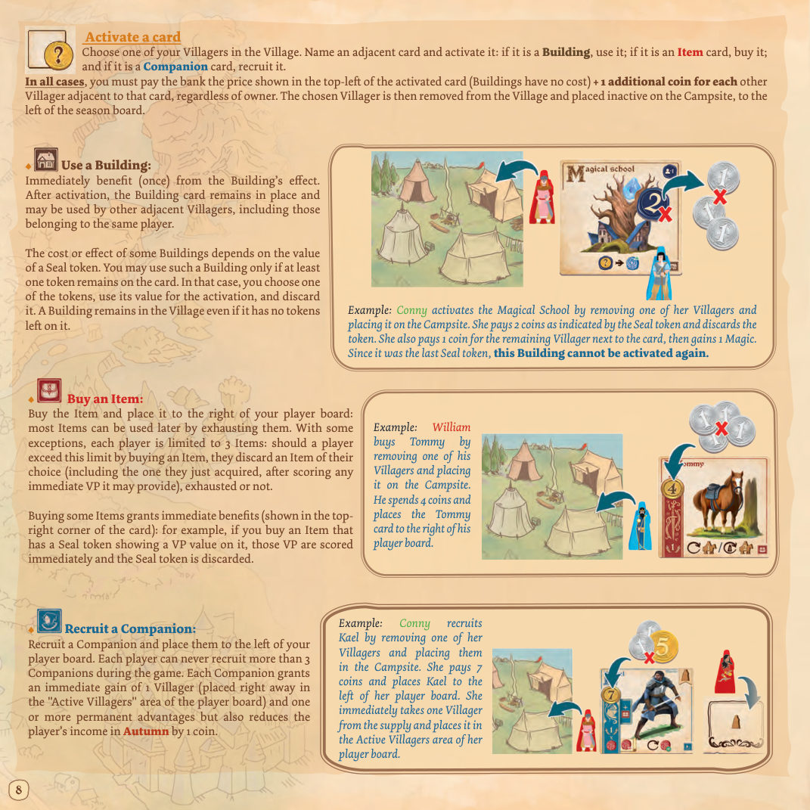

Essen 2026 · 中文规则
灰月镇
Greylune
在荒野边缘，灰月镇是无数远征的起点，也是它们的归乡。你扮演追寻声望的冒险者：招募伙伴、购置物品、走访镇上的建筑磨炼技艺，直面每一次危险。离开灰月镇，你会遭遇独一无二的际遇，接下非凡的委托；而当你回到镇上，在酒馆里把这些经历一遍遍讲出来，你的功业便会化作流传数百年的名声。
2–4 人 5 年 · 20 个季节 工人放置 + 工人取回 德式策略 Wiliam Attia
01 简介与目标你的目标是在五年游戏结束时拥有最多的胜利分（VP），成为灰月镇最有声望的人物。
为此，你会：
招募伙伴 、购买物品 、走访建筑 ；
外出冒险，经历各种遭遇 ；
在镇上的酒馆 里讲述你的故事；
提升你的力量 与魔法 技能；
参与事件 ，完成英雄任务 。
原书第 1 页 · 游戏总览：目标与五条主要途径 第五年结束时，VP 最多的玩家获胜。
计分时机
部分得分在游戏过程中即时结算，另一部分只在游戏结束时才计入。
02 配件公共配件
配件 数量 说明
主版图 1 张 放置村庄卡、遭遇卡、事件与任务的核心版面 村庄卡 49 张 20 张（I 组）、20 张（II 组）、9 张（III 组） 遭遇卡 41 张 16 张（I 组）、16 张（II 组）、9 张（III 组） 任务板块 9 张 英雄任务，放置在主版图对应位置 封印标记 24 个 放在建筑与部分物品上，取值 1–3 金币 50 枚 38 枚面值 1、12 枚面值 5 季节版图 1 张 标注冬、春、夏、秋，左侧为营地 起始玩家标记 1 个 每年传递给左手玩家 事件板块 6 张 每年翻开一张作为当年事件 规则书 1 本 —
原书第 2 页 · 配件清单与初始设置步骤 玩家配件
配件 数量 说明
个人版图 1 张 放置技能轨、村民区、故事卡与特殊行动位 冒险者 1 个 在主版图上移动 季节标记 1 个 在季节版图上指示当前季节 胜利分标记 2 个 25／50 与 75／100 各一枚，翻面表示过百 力量标记 1 个 在力量轨上移动 魔法标记 1 个 在魔法轨上移动 计分标记 1 个 在分数轨上移动 任务标记 3 个 完成英雄任务时放置 村民 7 个 3 个开局即活跃，4 个暂置、随招募伙伴逐步进入游戏 收入标记 8 个 按颜色区分归属 奖励标记 3 个 初始正面朝上放在个人版图旁
注意
每位玩家的 7 个村民中，只有 3 个在开局时可用；其余 4 个暂置于主版图旁，随着招募伙伴逐步进入游戏。
03 设置3.1 公共设置
把主版图 与季节版图 放在桌面中央。
组建村庄牌堆 ：不看内容，随机移除 2 张 I 组卡与 2 张 II 组卡。先把 9 张 III 组卡洗混放在最底，再把 18 张 II 组卡洗混叠在其上，最后把 18 张 I 组卡洗混叠在最上。牌堆背面朝上放在主版图旁，然后翻开顶部 9 张 ，在主版图左侧排成 3×3 网格，卡与卡之间留出一点空隙。组建遭遇牌堆 ：按 2／3／4 人局，分别把 5／6／7 张 III 组卡放在最底、10／12／14 张 II 组卡叠在中、10／12／14 张 I 组卡叠在最上（多余的卡不看内容直接收回盒中）。牌堆背面朝上放在主版图旁，然后翻开顶部 5／6／7 张 ，按与灰月镇的距离 排到主版图右侧：每张遭遇卡左上角的徽记 指示它该放在哪一格。组建事件堆 ：不看内容随机移除 1 张事件板块，把其余 5 张秘密洗混，背面朝上叠放在主版图对应位置上，形成事件堆。翻开第一张事件。随机抽 3 张任务板块 ，正面朝上随机放在主版图对应的 3 个位置上（靠近遭遇区域处）。未用到的任务收回盒中。
A．把收入标记 背面朝上放在主版图旁。
A．把封印标记 背面朝下放在主版图旁。若某些卡要求在其上放置封印标记，则立即放上并翻至正面。玩家人数减 1 的封印标记。标有「?」的卡：不论人数，只放 1 个 封印标记。
用金币建立公共供应区 ，金币视为无限。
最近一次去冒险的玩家拿取起始玩家标记。
3.2 玩家设置
每位玩家选择一种颜色，拿取对应颜色的个人版图与该颜色的全部配件；但其中 4 个村民 暂置于主版图旁，此时不可使用。
每位玩家拿取 1 个力量标记 与 1 个魔法标记 ，分别放在个人版图上各自技能轨的最底格 。
每位玩家把 3 个任务标记 放在个人版图对应的位置上。
每位玩家把 3 个村民 放在个人版图的「活跃村民」区。
在季节版图上，每位玩家把季节标记 放在「春」；在主版图上，把冒险者 放在灰月镇，计分标记 放在分数轨起点格，并把 25／50 与 75／100 两枚标记放在其正下方。
每位玩家把 3 个奖励标记 正面朝上放在个人版图旁。
每位玩家以 8 枚金币 开始游戏。
04 核心概念4.1 工人放置与工人取回
《灰月镇》是一款工人放置 + 工人取回 的游戏（本作中的「工人」即村民 ）：在五年之中，玩家按自己当前所处的季节行动。它首先是一款关于时机 的游戏。
春季 ，玩家把村民放到两张村庄卡之间 （卡牌以 3×3 网格展示）。这一步既让自己的未来选择保持不确定，又抬高对手激活这两张卡的费用。夏季 ，玩家把村民从村庄撤走，以购买物品、招募伙伴或使用建筑（村庄中的三类卡）。玩家还可以激活自己的物品卡，去做包括冒险在内的事：移动冒险者、结算遭遇卡——这些遭遇之后还能回到镇上的酒馆里讲述成故事。
原书第 4 页 · 工人放置与取回：春放夏取，村庄卡三类与冒险机制 4.2 村庄卡
村庄里有三种卡：伙伴 、物品 、建筑 。
伙伴
每名伙伴的招募费用都是 7 金币 ，并立即给你 1 个活跃村民 。所有伙伴在卡面下方都有一个反应能力 ，需要把该卡横置 才能发动。部分伙伴另有永久能力 ，无需横置，无论该伙伴是否横置都持续有效。每名伙伴都有自己独特的终局得分方式。
物品
物品的费用不等 （2 到 7 金币），通常带有一个可在夏季行动中使用的能力 。它们有时在游戏结束时值 VP，也可能在购买时立即给予技能或 VP 上的好处。它们代表装备、交通工具、贵重品，或是用后必须弃掉的药水。
上限
除少数例外，每位玩家最多持有 3 件物品 。
建筑
建筑被激活后仍留在村庄里 。有些建筑让玩家提升技能或获得 VP，另一些（侦察行会与旅人行会）则是外出冒险的途径。在酒馆 里，你可以讲述自己的故事。建筑可以被多次激活，但部分建筑在冬季会被放上封印标记 ：激活这类建筑时，必须选择并弃掉一个封印标记来决定其效果；若标记已用尽，该建筑便不能再被激活。
4.3 冒险
当你要去冒险时，你的冒险者先从灰月镇出发，然后可以在停留的格子上结算一张遭遇卡（前提是你满足其条件）：获得该遭遇卡的奖励，并把它滑到个人版图上方。同一年内，冒险者从上次停下的格子继续出发；每到秋季 ，冒险者便返回灰月镇。
4.4 营地
季节版图左侧是营地 ：每当一个村民被从村庄移除或被花掉，它就变为不活跃，必须放进营地，表示本年不能再使用。
05 游戏流程5.1 年与时期
游戏进行 5 年 ，分为 3 个时期：I （2 年）、II （2 年）、III （1 年）。每一年分为 4 个季节 ：
冬季 ：设置春季 ：村民放置夏季 ：行动秋季 ：维护与收入
每年从起始玩家开始，按顺时针轮流进行，直到所有玩家都进入秋季。轮到你时，必须从当前季节允许的行动中选择一项。
5.2 各季节可选的行动
季节 可选行动
春季 ① 放置一个村民
夏季 ① 获得金币
秋季 ① 停手（只能一次）
有些玩家可能已进入夏季或秋季，而另一些玩家仍在春季。每位玩家只按自己的季节 选择行动，与对手无关。每年开始时玩家所控制的村民称为活跃村民 ，始终位于个人版图的「活跃村民」区。
原书第 5 页 · 一年四季的流程与各季可选行动
重要
处于夏季的玩家，在同一年内永远不能 回到春季。此外，玩家一旦进入秋季，直到本年年末都不能再行动，但对手仍照常行动。只有当所有玩家都进入秋季，这一年才结束。
06 技能：力量与魔法力量 与魔法 是你的技能。你必须提升它们，才能应付越来越危险的遭遇与任务。
游戏结束时，若你的力量与魔法都至少为 3 ，得 2 VP 。
若两者都达到 5 ，改为得 5 VP 。
当某项技能已经在顶格、而你还需把它上移时，改为立即得 1 VP 。
上限
技能轨的上限是 5。达到 5 之后的每一次提升都换算成 1 VP。
07 遭遇卡每张遭遇卡包含四个要素：
距离 左上角徽记，决定它摆放在主版图右侧的哪一栏
故事值 0–3，决定讲故事时的贡献
条件 左下角，结算前必须满足
奖励 右下角
7.1 双重条件的遭遇卡
部分遭遇卡有两个条件 与两个奖励 。你只需满足其中一个条件，即可结算该遭遇并获得对应奖励（左条件对应左奖励，右条件对应右奖励）。若你想同时获得两个奖励，则必须在结算开始时 就满足两个 条件。
注意
你不能用其中一个奖励去满足另一个条件。
7.2 收入标记
当一张带收入图标 ⊞ 的遭遇卡在冬季进入游戏时，把对应的收入标记直接放在该卡上（收入面朝上）。玩家结算带收入标记的遭遇卡后，把该卡放到自己的个人版图上，并立即结算一次收入效果；此后每到秋季的收入步骤 ，再结算一次。
玩家可拥有的收入标记数量没有上限 （可以超过 3 个）。
08 冬季：设置按以下顺序执行：
把每位玩家的季节标记 移回季节版图的「春」。
起始玩家 把起始玩家标记交给左手边的玩家。弃掉上一年的村庄卡 、遭遇卡 与事件板块 。若这些卡上放有标记（封印或收入），一并弃掉。
翻开村庄牌堆顶部的 9 张 卡，随机摆在主版图旁组成 3×3 网格，卡与卡之间留出空隙。若某些卡要求放置封印标记，立即放上并翻至正面：标「−1」的卡放人数减 1 个；标「?」的卡不论人数只放 1 个 。若封印标记不足，把弃牌堆洗混组成新的背面朝下的标记堆。
翻开事件堆顶部一张：这是本年度的当前事件 。
翻开顶部 5／6／7 张 遭遇卡（2／3／4 人局），按距离 摆在主版图右侧。
第一年
第一年跳过冬季——它在初始设置时已经做过一次了。
09 春季：村民放置春季有三种行动可选。
9.1 放置一个村民
取一个自己的活跃村民 ，放到村庄中两张相邻卡之间 ，或放在一张卡与一个空的卡位之间。两张卡之间可放置的村民数量没有上限 （不论归属）。
示例
威廉取一个活跃村民，决定把他放在玉雕像与旅人行会之间。
原书第 6 页 · 冬季设置与春季的三种行动 9.2 参加事件
每位玩家每年只能采取一次此行动。要参加事件，你必须把一个活跃村民 放到事件板块上，并且能够立即激活它（若有费用则支付），从而获得其好处。
示例
威廉把自己的一个活跃村民放到事件上，并结算其效果。
9.3 进入夏季
把季节标记移到季节版图的「夏」，并立即 执行一个夏季行动。
示例
威廉把季节标记移到夏季，随即执行一个可用的夏季行动。
10 夏季：行动夏季共有六种可选的行动。
10.1 参加事件
每位玩家每年只能采取一次此行动。要在夏季使用当前事件，你必须把一个活跃村民 或 一个正位于村庄中的村民 放到事件板块上，并且能够立即激活它（若有费用则支付），从而获得其好处。
示例
威廉决定把村庄里的一个村民移到事件上，然后结算事件效果。
10.2 获得金币
选择自己在村庄中的一个村民：指定一张相邻 的卡，从银行获得金币，数额为其他相邻该卡的村民数 （不论归属）。随后，被选中的村民从村庄移除，放到营地上。
重要
若被选中村民两侧的卡都已被移除，你什么也得不到，但该村民仍要从村庄移除并作为不活跃村民放进营地。这仍然算作一个行动 。
提示
如果你还没用过，也可以改为采取「参加事件」行动。
示例
威廉指定玉雕像这张卡，移除自己的一个相邻村民并放进营地。此时该卡周围还有两名村民，于是他获得 2 枚金币。
10.3 使用一件物品
选择自己一件已扶正 且带有可用效果的物品，把该卡横置 （本年不能再使用，除非有卡牌效果将其扶正）。若它有多个效果，你必须选择其中一个。若所选效果需要花费一个或多个村民，把它们放进营地。
有些效果要求弃掉 该物品（多为药水），此时必须立即把它收回盒中，然后结算物品效果。
示例
康妮横置自己的短剑并结算其效果：花费 1 个活跃村民，换得 1 点力量。
10.4 激活一张卡
选择自己在村庄中的一个村民，指定一张相邻 的卡并激活它：若是建筑，则使用 它；若是物品卡，则购买 它；若是伙伴卡，则招募 它。
无论哪种情况，你都要向银行支付该卡左上角标示的价格（建筑无费用 ），并另外 为该卡周围每一个其他村民（不论归属）多付 1 金币 。随后，被选中的村民从村庄移除，作为不活跃村民放进营地（位于季节版图左侧）。
使用建筑
立即（一次性）获得该建筑的效果。激活后，建筑卡留在原处，可被其他相邻村民使用，也包括同一玩家的其他村民。
部分建筑的费用或效果取决于封印标记 的数值。只有当卡上至少还剩一个标记时，你才能使用这类建筑。此时你选择一个标记，用它的数值来决定本次激活，然后弃掉该标记。即使建筑上的标记全部用尽，该建筑仍留在村庄里。
示例
康妮激活魔法学校：移除自己的一个村民放进营地，按封印标记所示支付 2 金币并弃掉该标记；随后又为该卡旁剩下的那个村民支付 1 金币，最终获得 1 点魔法。由于这是最后一个封印标记，该建筑此后再不能被激活。
购买物品
买下物品，放在个人版图右侧 ：大多数物品之后可以横置使用。除少数例外，每位玩家最多持有 3 件物品 ；若因购买而超出上限，则自选一件物品弃掉（可以包括刚买到的那件，但要在结算完它可能提供的即时 VP 之后），不论是否已横置。
购买某些物品会立即获得好处（标在卡面右上角）。例如，若你买的物品上放着一枚显示 VP 数值的封印标记，这些 VP 立即结算，然后弃掉该封印标记。
示例
威廉买下汤米：移除自己的一个村民放进营地，支付 4 金币，把汤米这张卡放在自己个人版图右侧。
招募伙伴
招募一名伙伴，放在个人版图左侧 。每位玩家在整局游戏中最多招募 3 名 伙伴。每名伙伴立即带来 1 个村民 （直接放进个人版图的「活跃村民」区）以及一项或多项永久优势，但也会使玩家在秋季的收入减少 1 金币 。
示例
康妮招募凯尔：移除自己的一个村民放进营地，支付 7 金币，把凯尔放在个人版图左侧。她随即从供应区取 1 个村民，放进自己版图的「活跃村民」区。

原书第 8 页 · 夏季行动：购买物品、招募伙伴、激活卡牌与建筑 10.5 使用个人版图上的特殊行动
每位玩家个人版图上都有一个特殊位置，每年只能使用一次 ：放上 1 个活跃村民 ，然后从以下三项中选择一项：
讲故事 （见第 13 节），讲故事总值最多为 3，获得：2 金币 + 1 力量 + 2 VP ；把冒险者移动 1 格 （见第 12 节）；
获得 1 点魔法 。
示例
威廉把一个活跃村民放到个人版图的特殊行动位上，决定讲一个讲故事值为 2 的故事，获得 2 金币与 1 点力量。他把那张卡滑到个人版图右侧，表示故事已讲述。
10.6 进入秋季
把季节标记移到季节版图的「秋」，并立即 结算该季节的全部步骤（见第 11 节）。
重要
只有当玩家在村庄里不再有自己的任何村民 时，才能进入秋季。
11 秋季：维护与收入玩家进入秋季后，本年不能再采取任何行动，并按顺序执行以下步骤：
你的冒险者返回灰月镇 。
把营地、事件板块与特殊行动位上的村民全部收回个人版图的「活跃村民」区。
扶正 你所有的卡牌。获得收入 ：3 金币 ，每名伙伴 减 1 金币 ，再加上收入标记带来的收益（见第 20 节）。
当所有玩家都进入秋季，这一年结束。游戏最后一年同样要进行秋季。
示例
威廉把季节标记移到秋季。他先让冒险者返回灰月镇，然后收回所有村民——事件上的、营地上的，以及特殊行动位上的——放进「活跃村民」区。接着扶正自己横置的卡，最后获得收入：基础收入 3 金币，因有一名伙伴减去 1；再从绵羊收入标记得到 1 金币，合计 3 金币。
12 冒险与英雄任务12.1 去冒险
当你触发一次移动 行动（移动图标）时，可以让冒险者朝任意方向 移动至多所示格数；也可以选择原地不动。之后，你可以结算目的地格 上的一张遭遇卡。
要结算一张遭遇卡，你必须满足它的条件 （左下角），才能获得奖励 （右下角）。
部分遭遇卡有两个条件 与两个奖励 。你至少要满足其中一个条件，才能结算该遭遇并获得对应奖励（左条件得左奖励，右条件得右奖励）。若想同时获得两个奖励，必须在结算开始时 就满足两个条件。
结算完一次遭遇后，把该卡滑到个人版图顶边下方的「未讲述的故事 」区。多个冒险者可以处在同一格。
示例
康妮触发「至多 2 格」的移动。她只让冒险者移动 1 格，然后结算目的地格上的遭遇。她只满足了右侧条件（至少 1 点魔法），因此只获得 2 VP。随后她把该遭遇卡放进个人版图的「未讲述的故事」栏。
原书第 11 页 · 冒险：移动、结算遭遇、英雄任务与其他奖励 12.2 其他奖励
到达某些格子时，你可以选择不结算遭遇 ，改为获得以下好处：
到达标有金币的格子：获得 1 金币 。
到达标有 VP 的格子：获得 1 VP 。
12.3 英雄任务
到达任务格时，你可以选择不结算遭遇 ，改为结算该处的英雄任务 。此时你需要满足任务板块上的条件（见第 19 节）。
第一个 完成任务的玩家，把自己的一个任务标记放在第一格 （该格在终局计分时价值最高）。其他玩家则把标记放在第二格 。每位玩家对每个任务只能完成一次 。
无论该处是否还有可用的遭遇卡，你都可以选择这些其他奖励或英雄任务。
示例
康妮触发「至多 1 格」的移动。她决定留在原地，去结算那里的任务——该任务要求把一个村民从活跃区退回供应区。结算后，她把自己的一个任务标记放在第一个可用格上，终局时可得 8 VP。
13 讲故事当你激活一家酒馆 ，或使用个人版图上的特殊行动时，你就可以讲故事：用一张或多张此前已结算过的遭遇卡，讲一段讲故事总值最多为 3 的故事。
每家酒馆的奖励是累加 的：
讲故事总值为 1 ：只得酒馆的第一项 奖励。
总值为 2 ：得前两项 奖励。
总值为 3 ：三项 奖励全得。
故事讲完后，把所用的遭遇卡移到右侧个人版图的「已讲述的故事 」区。这些卡此后不能再用于讲故事。
示例
威廉使用银狼讲故事。他决定移动两张遭遇卡（一张故事值 1、一张故事值 2），总值 3。于是他获得三项奖励：4 金币；弃掉剩余的封印标记换 1 VP；扶正自己的一张卡。
原书第 12 页 · 讲故事、奖励标记与封印标记的用法 13.1 多张卡组合讲故事的规则
只有当每张卡都对奖励有贡献 时，才能用多张遭遇卡一起讲故事。
故事值为 3 的卡只能单独使用 。故事值为 0 的卡不能使用 （除非用卡牌效果把它提升）。允许同时使用两张故事值为 2 的卡，凑成讲故事总值 3。
注意
你不能用故事值为 0 的遭遇卡讲故事，除非先提升它的数值（魅力药水、吟游诗人塞伦）。
14 奖励标记每位玩家开局有 3 个奖励标记 ，正面朝上放在个人版图旁。三个标记的效果分别是：
得 1 个村民 ；
得 1 点力量与 1 点魔法 ；
得 5 金币 。
触发时机如下：
当玩家达到 8 VP 时，从自己的 3 个奖励标记中选一个 ，结算其效果，然后把它收回盒中。
当玩家达到 20 VP 时，从剩下的 2 个中选一个 ，结算其效果，然后把自己全部 奖励标记收回盒中。
示例
康妮达到 9 VP，越过了 8 VP 那一格：她决定获得 1 个村民，并把该奖励标记收回盒中。威廉则达到 20 VP，在剩下的两个标记中选择了「得 1 力量与 1 魔法」，随后把这个标记和最后一个标记一并收回盒中。
15 游戏结束与计分游戏在第 5 年 结束后结束。游戏最后一年同样要进行秋季。
所有未使用的奖励标记在终局计分之前 弃掉；若玩家在终局计分过程中达到 8 VP 或 20 VP，也不能 再获得奖励标记。
每位玩家按以下方式计算 VP：在分数轨上推进计分标记，到达相应数值时取用或翻面 25／50 与 75／100 标记。
在游戏过程中已获得的 VP 之外，再加上：
任务 带来的 VP；伙伴 带来的 VP；物品 带来的 VP；若你有 5 点力量与 5 点魔法，得 5 VP ；若力量与魔法都至少为 3，得 2 VP 。
VP 最多的玩家获胜。若出现平手，则共享胜利。
示例
威廉在分数轨上有 26 VP。他加上任务带来的 14 VP（5 VP + 9 VP），伙伴带来的 8 VP（卢坎 4 VP、塞伦 4 VP），物品带来的 11 VP（汤米 1 VP、号角 1 VP、魔法戒指 9 VP），以及技能带来的 2 VP（力量标记未达 5，故只计 2 VP）。威廉的最终得分是 61 VP 。
原书第 13 页 · 终局计分方式与完整算例
16 附录 A:事件事件共 6 张 。每年冬季翻开一张作为当年的当前事件；参加事件需把村民放上去并立即激活。
事件 类型 费用 效果
宴会 Banquet 事件 — 得 3 金币，或扶正一张自己横置的卡。 比武大会 Tournament 事件 1 力量 花费 1 力量，得 6 金币或 4 VP。 集会 Gathering 事件 1 力量或 3 金币 花费 1 力量或 3 金币，得 1 个村民。 大集市 Great fair 事件 3 金币 花费 3 金币，得 1 力量与 1 魔法。 魔法表演 Magic show 事件 1 魔法 花费 1 魔法，冒险者移动至多 5 格。 节庆 Festival 事件 — 把村民放在一个空位上，并同时获得两侧相邻的奖励。若你选择了「去冒险」奖励，则在另一项之后结算。秋季被腾出的空位可以再被其他玩家使用。
17 附录 B:村庄卡村庄卡共 49 张 ：I 组 20 张、II 组 20 张、III 组 9 张，组成村庄牌堆（III 组在底、II 组居中、I 组在顶）。
I 组 · 伙伴（6 张）
卡名 类型 费用 效果
阿里奥克 Ariok 伙伴 7 即时效果：得 1 个村民与 1 点魔法。 多里安 Dorian 伙伴 7 即时效果：得 1 个村民。 凯尔 Kael 伙伴 7 即时效果：得 1 个村民。 艾尔温 Elwen 伙伴 7 即时效果：得 1 个村民。 内里斯 Neris 伙伴 7 即时效果：得 1 个村民。 塞莉娅 Selia 伙伴 7 即时效果：得 1 个村民。
I 组 · 建筑、酒馆与物品（14 张）
卡名 类型 费用 效果
旅人行会 Travelers guild 建筑 0 冒险者移动至多 2 格。 魔法学校 Magical school 建筑 弃封印标记 弃掉一个封印标记并支付等额金币：得 1 点魔法。 铁匠铺 Smithy 建筑 0 得 1 点力量。 裂橡 The Riven Oak 酒馆 0 讲一或多段总值至多 3 的故事：得 2 VP + 1 力量 + 1 个村民。 金狮 The Golden Lion 酒馆 0 讲一或多段总值至多 3 的故事：得 4 金币 + 1 VP + X 金币（X＝弃掉的封印标记数值）。 侦察行会 Scouts guild 建筑 0 弃一个封印标记，冒险者移动至多等于其数值的格数。 汤米 Tommy 物品 4 横置去冒险至多 1 格；或横置并花费 1 个村民，移动至多 2 格。 百里靴 Hundred-league boots 物品 2 即时 VP：弃掉封印标记，得等于其数值的 VP。 短剑 Short sword 物品 2 即时效果：得 1 点力量。 玉雕像 Jade statue 物品 3 即时效果：得 1 点力量或 1 点魔法。 神秘地图 Mysterious map 物品 3 横置移动至多 1 格；或横置、花费 1 个村民并弃掉该卡，移动至多 3 格。 巫师法杖 Wizard's staff 物品 3 即时效果：得 1 点魔法。 法力药水 Mana potion 物品 3 即时 VP：弃掉封印标记，得等于其数值的 VP。 力量药水 Strength potion 物品 2 即时 VP：弃掉封印标记，得等于其数值的 VP。
II 组 · 伙伴（5 张）
卡名 类型 费用 效果
布兰 Bran 伙伴 7 即时效果：得 1 个村民。 高德里克 Gaudric 伙伴 7 即时效果：得 1 个村民。 卢坎 Lucan 伙伴 7 即时效果：得 1 个村民。 米拉 Mira 伙伴 7 即时效果：得 1 个村民。 塞伦 Seren 伙伴 7 即时效果：得 1 个村民。
II 组 · 建筑、酒馆与物品（15 张）
卡名 类型 费用 效果
银狼 The Silver Wolf 酒馆 0 讲一或多段总值至多 3 的故事：得 4 金币 + X VP（X＝弃掉的封印标记数值）+ 扶正一张自己的卡。 侦察行会 Scouts guild 建筑 0 弃一个封印标记，冒险者移动至多等于其数值的格数。 旅人行会 Travelers guild 建筑 2 冒险者移动至多 4 格。 镇公所 Town hall 建筑 弃封印标记 弃掉一个封印标记并支付等额金币：得 1 点力量与 1 点魔法。 快活熊 The Jolly Bear 酒馆 0 讲一或多段总值至多 3 的故事：得 3 VP + 2 金币 + 1 点力量或 1 点魔法。 英雄厅 Hall of the heroes 建筑 0 花费 1 点力量得 3 VP，和／或花费 1 点魔法得 4 VP。 飞行药水 Flying potion 物品 2 即时 VP：弃掉封印标记，得等于其数值的 VP。 雪鬃 Snowmane 物品 4 横置并花费 1／2 个村民，去冒险至多 3／5 格。 隐形药水 Invisibility potion 物品 3 即时 VP：弃掉封印标记，得等于其数值的 VP。 剑咒 Bladechant 物品 5 横置：得 1 点力量或 1 点魔法；或花费 1 个村民，得 1 点力量与 1 点魔法。 藏宝图 Treasure map 物品 3 横置移动至多 2 格；或横置、花费 1 个村民并弃掉该卡，移动至多 4 格。 号角 Horn 物品 2 横置并花费 1／2 个村民，得 3／5 VP。 金雕像 Gold statue 物品 4 即时效果：得 1 点力量或 1 点魔法。 耐力药水 Endurance potion 物品 3 即时 VP：弃掉封印标记，得等于其数值的 VP。 魅力药水 Charisma potion 物品 3 即时 VP：弃掉封印标记，得等于其数值的 VP。
III 组（9 张）
卡名 类型 费用 效果
图书馆 Library 建筑 弃封印标记 弃掉一个封印标记并支付等额金币：你「已讲述的故事」区每张卡得 1 VP（不看其数值）。 旅人行会 Travelers guild 建筑 2 冒险者移动至多 5 格。 要塞 Fortress 建筑 弃封印标记 弃掉一个封印标记并支付等额金币：每名伙伴得 2 VP。 曼陀林 Mandolin 物品 5 横置并花费 1 个村民：你「未讲述的故事」区每张卡得 1 VP（不看其数值）。 贤者之石 Philosopher stone 物品 3 即时 VP：弃掉封印标记，得等于其数值的 VP。 赤龙 The Scarlet Dragon 酒馆 0 讲一或多段总值至多 3 的故事：得 3 VP + 2 VP + 1 VP。 魔法戒指 Magic ring 物品 7 终局：9 VP。（卡面无能力） 红宝雕像 Rubis statue 物品 6 即时效果：得 1 点力量或 1 点魔法。 次元袋 Bag of holding 物品 4 永久：物品上限 +1；即使取得本卡前已达上限也生效。
18 附录 C:遭遇卡遭遇卡共 41 张 ：I 组 16 张、II 组 16 张、III 组 9 张。「即时奖励 + 收入」表示该卡带收入标记：结算时得一次，此后每个秋季的收入步骤再得一次。
I 组（16 张）
卡名 故事值 条件 奖励
世界树 World-tree 0 无 即时奖励 + 收入：得 1 VP。 旅店 Inn 1 支付 2 金币 得 1 个村民。 营地 Camp 1 至少 1 力量或 1 魔法 得 1 个村民。 石阵 Circle of stones 1 无 得 1 点魔法。 诅咒头骨 Cursed skull 3 至少 2 魔法 扶正一张自己的卡。 伏击 Ambush 1 至少 1 魔法 即时奖励 + 收入：得 1 金币。 隐士 Hermit 2 至少 2 力量 得 1 点魔法。 入会仪式 Initiation 1 支付 4 金币 得 1 点力量与 1 点魔法。 劫掠者 Marauders 2 至少 2 力量、或 2 魔法、或力量+魔法合计至少 2 得 4 金币。 狼群 Pack of wolves 2 至少 2 力量 得 3 VP。 矿坑 Mine 1 花费 1 个村民 即时奖励 + 收入：得 2 金币。 绵羊 Sheep 0 无 即时奖励 + 收入：得 1 金币。 熊 Bear 3 左：至少 1 力量 左：得 2 VP 乱石隘口 Rocky pass 2 无 得 1 点力量。 猛虎 Tiger 3 花费 1 个村民 无（见译者注） 山谷 Valley 0 左：至少 1 力量 左：冒险者移动至多 2 格（若同时取得另一项奖励，先结算该项再移动）
译者注
猛虎（Tiger）这张卡的奖励区在原文中为空，卡面也未印奖励。此处照原文如实留空：它的价值在于故事值为 3，可作为讲故事的高值素材。
II 组（16 张）
卡名 故事值 条件 奖励
匪帮 Bandits 1 至少 3 力量 得 4 金币与 2 VP。 商队 Caravan 0 花费 2 个村民 即时奖励 + 收入：得 4 金币。 游侠骑士 Errant knight 1 支付 2 金币 得 1 点力量与 2 VP。 流浪者 Vagabond 2 至少 4 力量、或 4 魔法、或力量+魔法合计至少 4 得 1 个村民。 训练 Training 0 支付 4 金币 即时奖励 + 收入：得 1 点力量。 制桶铺 Cooperage 0 支付 4 金币 即时奖励 + 收入：得 2 VP。 传说之剑 Legendary sword 1 花费 1 个村民 得 3 VP。 恶魔 Demon 3 左：至少 3 力量 左：得 3 VP 农庄 Farm 0 无 得 1 个村民。 钻石 Diamond 2 花费 1 点力量 得 5 金币。 比武 Joust 1 左：花费 1 个村民 左：得 3 VP 独角兽 Unicorn 3 至少 3 魔法 扶正一张自己的卡。 咒语 Incantation 3 花费 1 个村民 得 1 点魔法。 巫术 Witchcraft 1 支付 4 金币 得 2 点魔法。 孤塔 Lone tower 3 花费 1 点魔法 得 3 VP，然后冒险者移动至多 3 格。 宝藏 Treasure 2 左：至少 3 魔法 左：得 3 金币
III 组（9 张）
卡名 故事值 条件 奖励
射术 Archery 1 支付 3 金币 得 1 点力量与 3 VP。 圣杯 Holy chalice 2 至少 5 魔法 得 4 VP 并扶正一张自己的卡。 仙环 Fairy ring 2 花费 1 个村民 得 1 点魔法与 3 VP。 迷宫 Labyrinth 0 左：花费 1 个村民 左：得 4 VP 金矿 Gold mine 0 花费 1 个村民 得 7 金币。 死灵法师 Necromancer 1 力量+魔法合计至少 8 得 9 VP。 接力 Relay 1 支付 4 金币 得 2 VP，然后冒险者移动至多 3 格。 巨龙 Dragon 3 左：至少 5 力量 左：得 4 VP 雪隘 Snowy pass 2 至少 5 力量 得 5 金币与 3 VP。
19 附录 D:英雄任务英雄任务共 9 张 ，每局随机抽 3 张放上主版图。第一个完成任务者把任务标记放在第一格，之后完成者放在第二格；每位玩家对每个任务只能完成一次。
任务 完成条件 说明
捐赠 Donation 弃掉一件自己的物品 — 火龙 Fire dragon 力量+魔法合计至少 6 — 巨人 Giant 至少 4 力量 — 吟游诗人赛会 Bard tournament 把 2 张遭遇卡从「未讲述的故事」区移到「已讲述的故事」区 不看其数值；即使是 0 值的遭遇卡也可用于此任务。 亡灵 Undead 花费 1 点力量与 1 点魔法 — 赎金 Ransom 支付 6 金币 — 致命陷阱 Deadly trap 把 1 个可用村民退回供应区 — 怨灵 Wraiths 至少 4 魔法 — 婚礼 Wedding 花费 2 个村民 —
译者注
任务板块上的两档 VP 数值（先完成者较高）印在板块上，规则书正文与附录均未列出具体数字；示例中曾出现「第一个完成者可得 8 VP」。此处照原文只列条件，具体分值请以实物板块为准。
20 附录 E:封印标记与收入标记20.1 封印标记的放置
图标 含义
−1 该建筑获得等于玩家人数减 1 的封印标记。（设置时与每年冬季放置） ? 该物品获得 1 个 封印标记，不论人数。
封印标记永远正面朝上 放置。
20.2 封印标记的三种用法
封印标记的用法取决于它被放在哪里：
位置 用法
建筑 作为费用 时：弃掉一个标记，并支付等于其数值的金币，才能执行该建筑的行动。若建筑上已无标记，则不能执行该行动。 建筑 作为效果 时：弃掉一个标记，用其数值作为本次行动的强度。若建筑上已无标记，则不能执行该行动。 物品 购买带此符号的物品时，立即获得等于标记数值的 VP ，然后弃掉该标记。 酒馆 作为奖励 ：若讲故事的总值达到对应等级，弃掉一个标记，获得等于其数值的 VP／金币。若标记已用尽，仍可用这家酒馆讲故事并享受其他奖励。
20.3 收入标记
带收入图标的遭遇卡在冬季进入游戏时，会在其上放一个对应的收入标记。玩家结算该遭遇后，把卡放到个人版图上，立即 结算一次收入效果；此后每个秋季的收入步骤 再结算一次。收入标记的数量没有上限。
21 玩家帮助卡帮助卡在手，用来速查常用图标与效果。
21.1 费用的表示
图标含义 说明
支付 1 金币 从自己的金币中支付 1 枚给银行。 花费 1 个活跃村民 从个人版图的「活跃村民」区取 1 个村民，放进营地。 花费 1 点力量／1 点魔法 把对应的技能标记下移相应格数。 至少 1 力量／1 魔法／力量+魔法合计 2 条件判定，不花费。 把 1 个活跃村民退回供应区 该村民回到公共供应，不再属于你。 弃掉一件自己的物品 把该物品收回盒中。 弃掉这瓶药水／这件物品 使用后即弃，收回盒中。 横置这张卡／横置并花费 1 个活跃村民 横置表示本年已用；需要玩家花费时一并放进营地。 弃掉一个封印标记并支付等额金币 两者都要做。 弃掉一个封印标记，用其数值作为奖励 只看数值，不付金币。
21.2 卡面符号
符号 含义
建筑 ／物品 ／伙伴 ／药水 卡牌类型标识。 未讲述的故事 ／已讲述的故事 个人版图上的两个故事区。 VP 胜利分。 反应 该效果只有在执行图示行动时才能发动。 永久效果 持续有效，无需横置。 终局得分 ／即时得分 分别在游戏结束时／立即结算。
21.3 常见效果的写法
得 1 金币。
得 1 力量／1 魔法／1 力量或 1 魔法。
（卢坎）获得魔法时，改为得 1 力量（反之亦然）。
把对应的收入标记放到自己的版图上：立即获得该奖励，且此后每个秋季再获得一次。
得 1 个村民：直接放进个人版图的「活跃村民」区。
冒险者移动至多 1 格。
（艾尔温）冒险时，最大距离 +2。
弃掉一个封印标记，获得等于其数值的 VP／金币。
扶正一张自己的卡（物品或伙伴）。
（内里斯）在村庄「获得金币」时多得 2 金币，或 激活村庄卡时忽略额外费用。
完全无视一次遭遇的一项条件（对任务无效）。
力量／魔法临时 +2。
（布兰）激活卡牌需花费村民时，所需花费的村民数减 1。
使某一张遭遇卡的故事值变为 3。
把一个活跃村民放进村庄。
22 常见问题遭遇
双条件的遭遇怎么结算？
遭遇卡上的「去冒险」奖励怎么用？
「无视 1 项条件」怎么运作？ 无效 。
酒馆
金狮与银狼怎么用？
如何讲多段故事？
药水
法力、力量或飞行药水能把技能提升到 5 以上吗？ 不因此得分 。它对某些遭遇或任务仍然有用。
伙伴
伙伴横置时，永久效果还有效吗？
内里斯（盗贼）的能力怎么算？ 不生效 。
米拉（侦察兵）的能力可以在遭遇奖励带来额外移动之后使用吗？ 活跃 村民。
用塞莉娅（炼金术士）改变封印标记的数值后，标记怎么处理？
事件
节庆上的某个位置被玩家在其秋季腾出，我能接着用吗？
在节庆上获得多项奖励时，顺序如何？ 最后 结算。
个人版图
特殊行动有什么限制？ 活跃 村民。
力量（或魔法）标记已在 5 时，再获得力量（或魔法）会怎样？
游戏结束
最后一年也有秋季吗？
终局计分时能结算奖励标记吗？ 之前 就已弃掉。
5 力量与 5 魔法能得多少 VP？ 替代 「两项至少 3」时的 2 VP。
23 制作名单
游戏设计 Wiliam Attia 美术 David Sitbon & Ulric 规则撰写 Mathieu Verdier 排版（DTP） Ulric Maes 开发 Wiliam Attia & Mathieu Verdier 项目管理 Yann Beligné 制作管理 Jeanne Danmanville 传播 Pauline Lebel 出品人 Emmanuel Beltrando 校对 Alexandre Figuière
本页为《灰月镇 Greylune》官方英文规则书与官方 FAQ 的中文译本，供中文玩家查阅。原文一切解释权归出版方所有；规则冲突时以英文原版为准。
译制依据：RULES_GREYLUNE_236X236_EN_LIGHT.pdf （20 页）与 FAQ_GREYLUNE_EN_236X236_WEB.pdf （2 页）。术语处理：Villager＝村民、Companion＝伙伴、Seal token＝封印标记、exhaust＝横置、ready＝扶正。